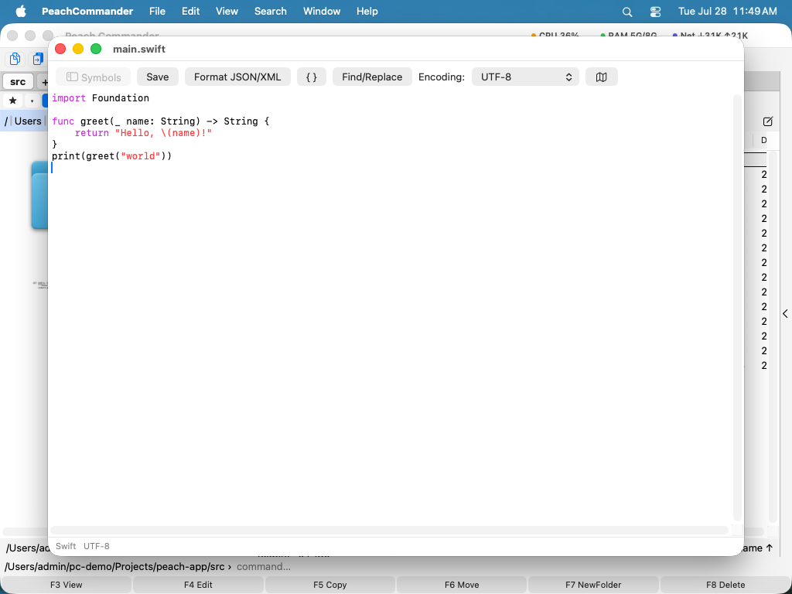

编辑文件
当你需要更改文件而不仅仅是查看它时，Peach Commander 会用内置编辑器将其打开。文本和代码文件会在功能完整的编辑器中打开，具备语法高亮、查找和替换、代码中符号的大纲，以及用于快速导航的缩略图。二进制文件可以在独立的十六进制编辑器中打开，你可以在其中检查和更改单个字节。你无需离开应用即可进行快速编辑。
编辑文本或代码文件
- 在任一面板中，将光标移到你想更改的文件上。
- 按 F4，或选择“文件 ▸ 编辑”。文件会在编辑器窗口中打开。
- 进行你的更改。如果文件是可识别的编程或数据格式，关键字、字符串和注释会被自动着色。
- 按 Cmd+S（或单击“保存”）写入你的更改。保存会替换文件；若希望把先前的内容留在它旁边，请在设置 ▸ 编辑/查看中打开备份。
若要在当前位置新建一个全新的文本文件，请按 Shift+F4。

（图：编辑器，带有语法高亮、左侧的符号大纲和右侧的缩略图。）如果文件属于 root——/etc 里的条目、launchd plist、Web 服务器的配置——保存时会提议以管理员身份进行：macOS 按常规请求授权，内容通过一个私有临时文件传递而不是命令行，并且文件保留自己的所有者和权限，不会悄悄变成你的。
如果文件无法写入，您会在打开时就得知，而不是在尝试保存时：标题会带一个锁，状态行会说明是哪种障碍——属于其他用户、权限不允许写入、文件被锁定、只读卷，或者受系统保护。其中只有第一种可以通过授权保存来解决，也只有那一种会提供授权；其余情况即使输入密码也仍会失败。
边栏显示行号，光标所在行比其他行更亮；编码菜单旁的按钮可以隐藏它。折行的行只编一个号，所以行号始终和编译错误或评审意见所指的那一行一致。
查找、替换和导航
- 按 Cmd+F 打开查找栏。若要替换文本，打开查找栏并将其切换到替换视图，或单击工具栏中的“查找/替换”。
- 若要使用正则表达式，请选择 搜索 ▸ 以正则表达式查找…（Ctrl+Cmd+F）或 以正则表达式替换…（Ctrl+Opt+Cmd+F）。
^和$匹配行首和行尾，替换文本中的$1表示第一个捕获组——因此把(\w+) (\d+)替换为$2=$1，alpha 11就变成11=alpha。仅在所选内容中可将更改限制在选中的文本内；全部替换将所有匹配一次改写完，可用 Cmd+Z 一步撤销。 - 查找下一个（Cmd+G）沿用你最后使用的那种搜索，无论是普通搜索还是模式。无法编译的模式会在对话框中报告，而不是悄悄地什么也找不到。
- 单击“格式化 JSON/XML”，可将 JSON 或 XML 文档重新缩进为整洁易读的布局。
- 点按“符号”（或按 Cmd+Shift+O）可显示一个边栏，列出代码中的类、函数和方法 — 若是 JSON、YAML 或 XML 文件，则列出其键和元素。点按条目即可直接跳转。关于这个结构还能做什么，参见处理 JSON、YAML 和 XML。
- 按 Cmd+L 跳转到指定行。
- 按 Cmd+\ 在括号与其匹配的另一半之间跳转。
- 单击地图按钮，可显示或隐藏缩略图——它是整个文件的缩放概览，你可以单击它进行滚动。
- 如果文件是以默认文本编码以外的编码保存的，请使用工具栏中的“编码”菜单。
处理 JSON、YAML 和 XML
这三种格式有专门的处理方式，因为浏览配置文件靠的是结构，而不是行号。
符号边栏会列出 JSON 或 YAML 文件的键以及 XML 文件的元素，嵌套方式与文档本身一致。元素若带有 id、name 或 key 属性，就用它来命名，于是二十条 <server> 也能分辨。列表把条目显示为 [0]、[1]，条目以键开头时也一并显示该键 — [0] name。列表上方的过滤栏可在任意大小的文件中按名称找到某个键，状态栏则始终显示插入点所在位置的路径。
即使文件已经损坏，也能得到损坏位置之前的大纲 — 而那正是最需要大纲的时候。
结构菜单 — 编辑器在前台时位于菜单栏中 — 让你在这个结构里移动：
- 转到外层节点（Ctrl+Cmd+上）向外移到包含插入点的块：从
image:移到它所属的服务。 - 转到第一个子节点（Ctrl+Cmd+下）向内移动。
- 转到上一个 / 下一个同级节点（Ctrl+Cmd+左 / 右）在同一层级的条目之间移动，跨过中间的整个块 — 从一台服务器直接到下一台，不必滚过四十行设置。
- 选择外层节点（Ctrl+Cmd+A）选中插入点所在的块。再按一次，选区扩大到外面那一层块，于是无需拖动就能精确选中一个服务或一个元素。
- 拷贝结构路径（Ctrl+Cmd+C）把插入点的位置拷贝为该格式自身工具接受的表达式：JSON 和 YAML 得到
.services.web.ports[0]，正是jq和yq期待的形式；XML 得到//server[@id='web-1']/port，也就是一个 XPath。不是普通单词的键会自动加引号 — 写作."content-type"而不是.content-type，后者在jq里完全是另一个意思。 - 校验文档（Ctrl+Cmd+V）检查文件并把插入点放到问题上，原因显示在窗口标题里。它还会报告工具链里其他任何东西都不会提的问题：重复的键，每个 JSON 解析器都会默默接受并丢掉两个值中的一个；以及末尾多余的逗号，Apple 自家的解析器接受它，而 Python、Go 和
jq拒绝。
长文件的读法是把眼下不处理的部分折叠起来。折叠节点（Option+Cmd+左）折叠插入点所在的块 — 取最近的、有主体的那一个，所以在单独一行上按下时折叠的是它外面的映射；展开节点（Option+Cmd+右）重新打开它；折叠最外层（Option+Cmd+上）把最外层全部折起来以便通览；全部展开（Option+Cmd+下）恢复原状。带键或标签的那一行仍然可见并加了标记，所以折叠的块看得出是折叠的；行号会跳过被隐藏的行。文档中没有任何内容被移除 — 只是不绘制而已，因此存储、撤销和查找都不受影响，查找依然能找到折叠块里的文本。把插入点放进折叠处会打开它，而任何编辑都会全部打开：一处折叠就是一对位置，插入文本会让它们移动。
同一个菜单里还有各项转换，它们以一个可撤销的步骤重写整个文档 — 若已选中文本，则只重写所选部分：压缩为一行，用于必须放进 curl 命令里的 JSON 主体；递归排序键，让同一套设置的两次导出不再有任何差异；转义为 JSON 字符串和反转义 JSON 字符串，应对把证书、脚本或整个 JSON 文档放进某个 JSON 字段这件日常琐事；以及将 JSON 转换为 YAML。压缩会保留键的顺序和每个数字的确切写法，因为 1.0 和 1 不是同一个版本；排序则有意不保留，因为排序本身就是重新排列。转义适用于任何文件，不限于 JSON。没有从 YAML 到 JSON 的转换，这是一个决定：那需要本系统并不具备的 YAML 解析器，而对锚点或带引号的 true 猜错一次，配置文件就会变成另一个配置文件。
JSON 和 XML 由真正的解析器检查。YAML 在本系统上没有解析器，因此检查覆盖那些无需解析器也能发现的错误 — 用制表符缩进（YAML 明确禁止）、与任何层级都不对齐的缩进、重复的键、未闭合的引号 — 并且如实说明，而不是宣称文件有效。
通过 shell 命令过滤
点按过滤…（或按 Shift+Cmd+\），即可把所选文本送入一个命令，并用该命令打印的内容替换它。未选择任何内容时，整个文档都会送入命令。这样，您本就熟悉的工具都成了编辑器命令：sort -u 删除重复行，jq . 让 JSON 响应变得易读，column -t 对齐表格，base64 -d 解码一段数据，openssl x509 -noout -text 以可读形式显示证书。
命令在您的登录 shell 中运行，因此 PATH、别名和函数的行为与在“终端”中完全一致，管道和引号也都表示您预期的含义。工作目录是所编辑文件所在的文件夹，因此相对路径会在您预期的位置解析。用过的命令会被记住，下次在下拉列表中提供。
如果命令失败，您的文本保持不变，命令自身的错误信息会显示在状态行中——jq 的语法错误绝不会被粘贴进您的文件。不打印任何内容的命令会清空所选内容，而这正是用 grep 过滤的用途，按 Cmd+Z 即可恢复。始终不结束的命令会在二十秒后被停止。
排序、去重与整理行
行菜单位于工具栏中，编辑器在前时也出现在菜单栏里。它完成那些反复出现的编辑，既不需要输入命令，也不需要安装工具：
- 按 A→Z 或 Z→A 排序，数字按数值比较，因此
file9排在file10之前。 - 反转各行的顺序。
- 删除重复行，每组保留第一行，其余各行的顺序保持不变。
- 删除空行，包括那些只因含有空格而看起来是空的行。
- 删除行尾空白——正是这种看不见的差异让 diff 变得杂乱。
- 仅保留包含您所输入文本的行，或者反过来删除它们。
选中文本时，上述每项操作都作用于所选的行；所选内容会先扩展为整行，因为排序半行没有意义。未选择内容时，它们作用于整个文档。每项操作都是一个撤销步骤，因此按 Cmd+Z 可撤销整项操作。
行尾符位于“编码”菜单旁边：Unix 和 macOS 用 LF，Windows 用 CRLF，经典 Mac OS 用 CR；当一个文件中出现多种行尾符时显示 (mixed)，这常常正是脚本报出莫名错误的原因。选择另一种即可在一个可撤销的步骤中转换整个文件。行操作从不自行改变行尾符：排序后的 CRLF 文件仍然是 CRLF。
格式化文件
在编辑器中点 格式化（查看器里有同样的命令）即可重新缩进文件。Peach Commander 按扩展名挑选格式化工具，并在状态栏显示用了哪个，例如 formatted (jq) —— 结果是被什么塑形的，一看便知。
开箱即用 的有 JSON、XML、SVG、plist、HTML、INI 风格的配置和 YAML。YAML 是特例：只做整理，不重新缩进，因为在 YAML 里缩进 就是 结构，没有真正的 YAML 解析器就改写它可能改变文件的含义。行尾空格去掉，缩进里混进的制表符变成空格，连续空行收拢——而块标量（| 或 >）里的内容原样保留，因为那里的空白就是内容。
更好的工具会自动接手。 如果装了下面任意一个，Peach Commander 就用它，因为专门的工具通常符合整个生态的预期——而对配置格式，它会保住你的注释：
| 安装 | 就能得到 |
|---|---|
yq 或 prettier |
完整的 YAML 格式化，注释保留 |
taplo |
TOML |
sqlformat 或 sql-formatter |
SQL |
prettier |
Markdown |
jq |
常规风格的 JSON |
xmllint |
XML 和 SVG |
若某类型没有格式化工具，按钮变灰、菜单项禁用。硬要试也会告诉你原因——“taplo 未安装” 和 “不是有效的 JSON” 是两回事。
使用自己的格式化工具
要处理 Peach Commander 不认识的类型，或者换别的工具，在配置文件夹里建一个 formatters.ini——每个扩展名一节：
[swift]
tool = swiftformat
args = --quiet stdin
[sql]
tool = /opt/homebrew/bin/sqlfluff
args = format -
tool 是可执行文件名（按你的 shell 的方式查找）或绝对路径；args 原样传入。文件文本从标准输入进去，格式化后的文本从标准输出读回，所以任何守规矩的命令行格式化工具都能用。你的条目胜过其他一切。首次启动会生成一份带注释的模板，打开填上即可。
插件也能提供格式化工具——见 Plugins。
逐字节编辑文件
- 在面板中选择文件。
- 选择“文件 ▸ 以十六进制编辑”（或右键单击文件并选择“以十六进制编辑”）。
- 输入十六进制数字以覆盖字节，或使用方向键在文件中移动。Backspace 和 Delete 会移除字节。
- 按 Cmd+S 保存。与文本编辑器一样，只有在你打开备份后才会保留先前的内容。
快捷键
| 操作 | 按键 |
|---|---|
| 编辑文件 | F4 |
| 创建并编辑新文本文件 | Shift+F4 |
| 保存 | Cmd+S |
| 查找 | Cmd+F |
| 显示/隐藏符号大纲 | Cmd+Shift+O |
| 转到行 | Cmd+L |
| 跳转到匹配的括号 | Cmd+\ |
| 转到外层节点（JSON/YAML/XML） | Ctrl+Cmd+上 |
| 转到第一个子节点 | Ctrl+Cmd+下 |
| 转到上一个 / 下一个同级节点 | Ctrl+Cmd+左 / 右 |
| 选择外层节点 | Ctrl+Cmd+A |
| 拷贝结构路径 | Ctrl+Cmd+C |
| 校验文档 | Ctrl+Cmd+V |
| 折叠 / 展开节点 | Option+Cmd+左 / 右 |
| 折叠最外层 / 全部展开 | Option+Cmd+上 / 下 |
| 撤销 / 重做（十六进制编辑器） | Cmd+Z / Cmd+Shift+Z |
| 通过命令过滤所选内容 | Shift+Cmd+\ |
说明
- 语法高亮涵盖 JSON、C、C#、Java、JavaScript、TypeScript、Python 和 Rust。其他文件类型仍可正常打开和编辑并带基本着色，但详细高亮仅适用于受支持的语言。
- 大纲涵盖受支持的编程语言以及 JSON、YAML 和 XML — 包括基于 XML 的格式，如
.plist、.svg、.csproj和.storyboard。结构导航、路径和校验命令适用于 JSON、YAML 和 XML。 - 符号大纲和“转到行”功能适用于文本编辑器。十六进制编辑器用于二进制检查和字节级编辑，而非文本。
- 除非你要求，两个编辑器都不会保留备份。在设置 ▸ 编辑/查看中打开“保存时保留先前内容的备份副本（.bak）”，首次保存便会把原始文件以
name.bak写在文件旁边，意外的更改因此容易撤销。